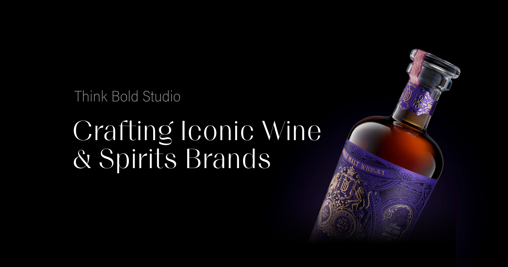
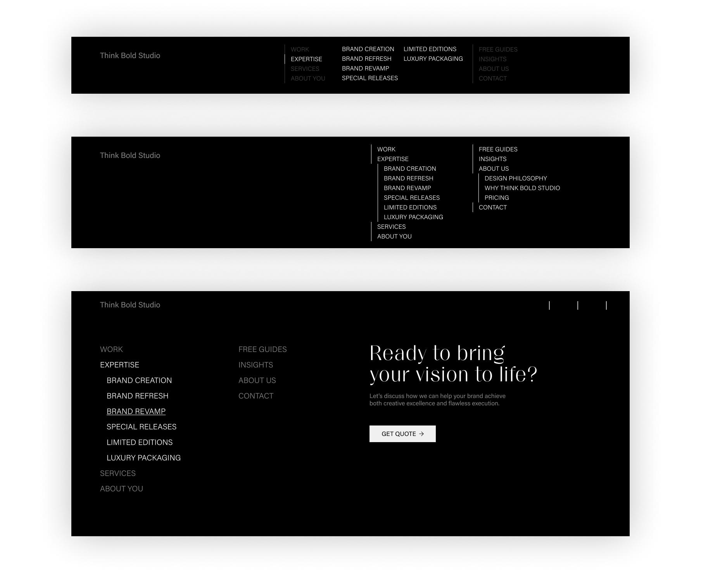
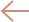

Think Bold Studio, based in Aveiro, Portugal, is a specialist design studio focused on premium packaging and brand identity — particularly for wine and spirits. Founded in 2015, they emphasise not only bold creative ideas but also flawless execution, offering services ranging from brand strategy and naming through to production support. They help independent beverage brands stand out on the shelf and in the market.
visit websiteThink Bold outgrew their old website, so the goal was to give it a refreshed, modern and clean look, with small animations that reflect their professionalism.
As UX designer and Webflow developer I was responsible for designing the wireframe and implementing the website, adding small animation.
• digital wireframing
• webdevelopment
Bakos Tamás - UI design, animation
Client First design system
To organise, name and structure the CSS classes I used the Client First design framework created specifically for Webflow. Based on it the project is easily scalable and maintainable.
Relume
To accelerate the process we used Relume to generate the wireframe.
uses a library of over +1000 components to
Compatible firth the Client First design system. Through a Webflow app it enables to import components, wireframes to Webflow with just a few clicks.
Webflow
Webflow as a no-code design and development tool known for its flexibility and control over design elements. Webflow’s Designer was used to build the layout and styling while ensuring responsive design across devices.
I generated the wireframe based on the sitemap and filled it with content. At this step, together with the designer, we checked every component and noted if it needed some modifications during the implementation phase.
The idea was to create a UI design only for the landing page and adapt it to the rest of the site during implementation. The sections that required different layout than the imported one, were implemented separately. At the end micro interaction animations were added to the images.
I used Finsweet Attributes to implement the functionality of the filter and dynamic sliders.
We collaborated with the Serps Invaders for a better SEO experience.
The menu is not the usual one line navigation, it is structured in three columns. The first one collects the links that focus on the client, the second one collects the links that focus on the studio, and the third which highlights the contact option. Because of this unusual structure, the height of the navigation increased. The challenge was how can we design the dropdown links to preserve the ellegace and simplicity of the menu. We considered a fully closed menu, and different options to open the dropdowns. A few possibilities come up:

The client decided to keep the listed menu on desktop. Since we didn't want to use arrows, we introduced a small dot to mark the expandable navigation links. The opened dropdown menus are overlaping the other menu items, this way it doesn't
